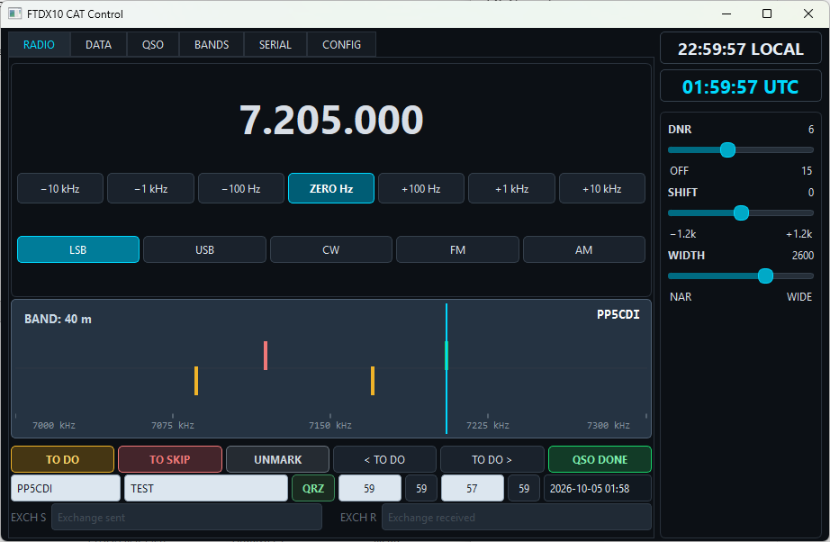

F
Real-time frequency
Monitor the current VFO A frequency in real time and change frequency directly from the computer interface.
A lightweight CAT control application for the Yaesu FTDX10, designed to provide quick access to the functions that matter during real HF operation.

CAT Control provides direct access to frequently used FTDX10 functions while keeping the radio and computer synchronized.
Monitor the current VFO A frequency in real time and change frequency directly from the computer interface.
Change operating modes directly from CAT Control, including LSB, USB, CW, FM and AM.
Direct control of useful FTDX10 DSP functions such as DNR, SHIFT and WIDTH without navigating radio menus.
CAT Control communicates continuously with the FTDX10 through the USB CAT interface, keeping frequency and operating state synchronized.
Mark interesting frequencies, identify stations and move quickly between previously marked frequencies during operation.
Associate a callsign with the current frequency. The information is stored and automatically recalled when you return to that frequency.
CAT Control communicates directly with the Yaesu FTDX10 through its USB CAT interface.
Connect the FTDX10
Connect the radio to the computer through USB.
Open CAT Control
Select the FTDX10 CAT COM port and connect.
Operate
Frequency, mode and supported controls remain synchronized
with the radio.
The project is being developed and tested with the Yaesu FTDX10. Downloads, new versions, documentation and additional features will be published here as the project evolves.